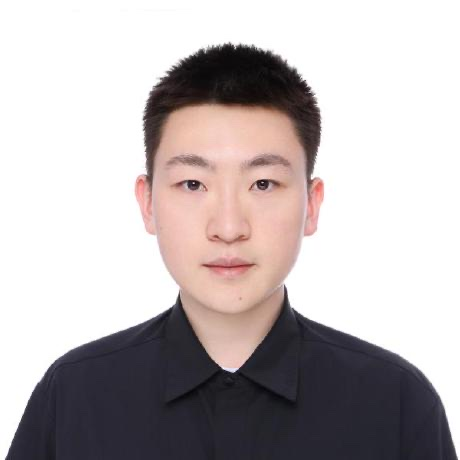

Pingyue Zhang
PhD student in Computer Science at Northwestern University, advised by Manling Li.
I study how AI agents build their own understanding of the physical world and act on it, from spatial reasoning in foundation models to embodied agents and robotics.
I am looking for research internships for summer 2027.
News
- Oct 2026Released Embodied First Exam, an open exam for code agents on robot tasks.
- Jun 2026Joined Adobe Research as a research intern for the summer.
- Apr 2026RAGEN-2 accepted to ICML 2026 as an oral.
- Jan 2026Theory of Space and MindCube accepted to ICLR 2026.
- Sep 2025VAGEN accepted to NeurIPS 2025.
Selected publications
* Equal contribution
-
Preprint, 2026
-
ICLR 2026. Spotlight at the ACL 2026 Workshop on Advances in Language and Vision Research.
-
ICLR 2026. Spotlight at the ICCV 2025 Workshop on Embodied Spatial Reasoning.
-
ICML 2026. Oral.
-
NeurIPS 2025
-
Preprint, 2025. Best Poster Award at the Midwest Machine Learning Symposium 2025.
-
AAAI 2026
Before my PhD, I worked on audio and multimodal representation learning at Shanghai Jiao Tong University (AAAI 2024, ACM MM 2021 and 2023, Interspeech 2023 and 2024, ICASSP 2024). The full list is on Google Scholar.
Experience
- Summer 2026Research Intern, Adobe Research
- 2024 – nowPhD in Computer Science, Northwestern University
- 2021 – 2024M.Eng. in Computer Science, Shanghai Jiao Tong University (advised by Mengyue Wu)
- 2017 – 2021B.Eng. in Computer Science (Honors), Shanghai Jiao Tong University